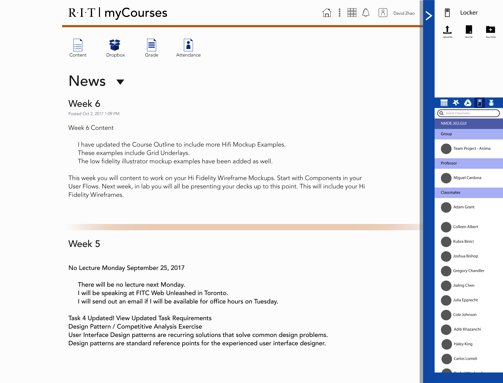

The summary of this project is to improve MyCourses. However, this project is
mainly focus on two pages of Mycourses, the Homepage, and the GUI page. Some students
do not like the overall design of the Mycourses and other functions that are in MyCourses.
Problems
The problem is MyCourses is a disorganized. The layout with poor, utilities are rarly used and
communication is non-existance
This is the Homepage of MyCourses.This is the extented part of the Homepage.This is the Tech Support of part of the Homepage.This is the Graphic UI MyCourses Page.
Goal
Communication
Make communication easier between students to professors, and students to other student.
Navigation
Users has a hard time finding their ways to navigate their destination.
Utility
The utility are very under that barley anyone uses them or even notice them.
Layout
Some students may like the new design of MyCourses, but most of
the older students do not like the new design because of too much whitespace.
Taxnolomy
This is the flow of MyCourses Currently.
This is my version of MyCourses.
Competitive Research
Facebook Messanger
Facebook is a social media that post images, comment on post, and message to
other users in the Facebook community. With the Facebook Messenger, and
the layout of the Facebook page, it would help the users in MyCourses to make
an easy communication between students to other students and students to
professors.
Twitter
Twitter has a better layout than Facebook, but the message system in Twitter
can be useful as well. Because of the full screen of the messenger if the user
wants to. Their navigation system is also easy to use and understand.
Analytical Research
Dropbox Paper
Dropbox Paper has a unique comment system. This comment system
allows the user to comment a whole section, to a sentence to just one word.
Slack
Slack allows the user to message people in a more buisness way. Allowing the users to group
other people to work on one project.
User Flow
Name:
Manov Mistrees
User:
Casual User
Gender:
Male
Age:
18
Manov Mistrees is a casual user. He would normally go to MyCourses just to check
on content, look at the notification, check on homework assignment and looking up on quizzes.
He would quickly get the quizzes and homework over with as quickly as possible.
Name:
Elizabeth Doodletones
User:
Casual User
Gender:
Female
Age:
19
Elizabeth Doodletones hate the design layout every time she logs in. She have a hard time locating her classes when she log in. When she looks
for her content, she will get angry that the teacher would either not give the right content, being too vague to understand or not posting any
content at all. When she needs help she needs to ether get out of the way by emailing to the professors, or posting it at the discussion page. The
problem with the discussion page is that all of her professors never checks on that page. With email, if she did not log in or did log in but quit the
Internet program, she would have to log in which frustrates her even more. She wants an easier way of to communicate with her professors.
Name:
Manga Kamen
User:
Power User
Gender:
Male
Age:
24
Manga Kaman likes the new design of the MyCourses. What he likes about the new design of the MyCourses is: refined notification system, the
Starfish App, and the Calendar App. With the refined notification system, he abuses it by looking at the first thing when he log in. He would check
on it to see if his professors post any new content, assignments that will be due soon, and any past post on the notification system. With Starfish,
he would make an appointment with his advisor. With the Calendar, he can make important dates for events and assignment.
But he does have a hard time finding his own classes in the Navigation system because all the images look the same and it does not fit in the
theme of the classes. Other than that, he does not really have much problems with the new MyCourses
Sketch
Exploration Sketches
These are the very first sketches of rework MyCourses.
Analytical Sketch
These sketches will help me analyze the web.
section here
Hi-Fi Wireframe
Homepage
Version 1
This is the first version of the homepage.
There will be some diagnal borders. So it will let
the user know that there are more content at the bottom.
This is the full page of the homepage
Version 2
This is the second version for the home screen. With this version, all the unnessary
information is not in this site. Everything looks more clean than the previous one.
The only thing that is there is the utility and the class selection.
Graphic UI Page (GUI)
Version 1
On the right side of the screen, there is a utility section. This allows the
user to message other students in the same class as you, chat in groups without
relaying on outside source to contact each other.
Version 2
On the right side of the screen, there is a utility section. This allows the
user to message other students in the same class as you, chat in groups without
relaying on outside source to contact each other.
Utility
Location
On the right side of the screen, there is a utility section. This allows the
user to message other students in the same class as you, chat in groups without
relaying on outside source to contact each other.
Location
This is the open version of the utility Bar.
Indept
This is the second version of the utlity bar at the. Made the selection stick out so
it looks like a tags hanging outside of the bar.
Communication Section
Messanger - Single Person
This is the second version of the utlity bar at the. Made the selection stick out so
it looks like a tags hanging outside of the bar.
Messanger - Group
This is the second version of the utlity bar at the. Made the selection stick out so
it looks like a tags hanging outside of the bar.
Main Screen
This is the second version of the utlity bar at the. Made the selection stick out so
it looks like a tags hanging outside of the bar.
Google Drive
This is the second version of the utlity bar at the. Made the selection stick out so
it looks like a tags hanging outside of the bar.
Locker
This is the second version of the utlity bar at the. Made the selection stick out so
it looks like a tags hanging outside of the bar.
Upload From CPU
This is the second version of the utlity bar at the. Made the selection stick out so
it looks like a tags hanging outside of the bar.
Upload From CPU - To Messanger
This is the second version of the utlity bar at the. Made the selection stick out so
it looks like a tags hanging outside of the bar.
Location
This is the second version of the utlity bar at the. Made the selection stick out so
it looks like a tags hanging outside of the bar.
Create a Group
This is the second version of the utlity bar at the. Made the selection stick out so
it looks like a tags hanging outside of the bar.
Commenting
This is the second version of the utlity bar at the. Made the selection stick out so
it looks like a tags hanging outside of the bar.
Comment Created
This is the second version of the utlity bar at the. Made the selection stick out so
it looks like a tags hanging outside of the bar.
Main Design
Homepage
This is the second version of the utlity bar at the. Made the selection stick out so
it looks like a tags hanging outside of the bar.
GUI Page
This is the second version of the utlity bar at the. Made the selection stick out so
it looks like a tags hanging outside of the bar.

Utility
Navigation
The naviation is just used as just an Icon for the Main Navigation.
Main NavigationGUI Navigation
Search Classmates / professors
This is the second version of the utlity bar at the. Made the selection stick out so
it looks like a tags hanging outside of the bar.
Closed
This is the second version of the utlity bar at the. Made the selection stick out so
it looks like a tags hanging outside of the bar.
Open
This is the second version of the utlity bar at the. Made the selection stick out so
it looks like a tags hanging outside of the bar.
Main Communication
Commenting
This is the second version of the utlity bar at the. Made the selection stick out so
it looks like a tags hanging outside of the bar.
Commenting 2
This is the second version of the utlity bar at the. Made the selection stick out so
it looks like a tags hanging outside of the bar.
Messanger
This is the second version of the utlity bar at the. Made the selection stick out so
it looks like a tags hanging outside of the bar.
Upload
Main Page
This is the second version of the utlity bar at the. Made the selection stick out so
it looks like a tags hanging outside of the bar.
Google Drive
This is the second version of the utlity bar at the. Made the selection stick out so
it looks like a tags hanging outside of the bar.
Locker
This is the second version of the utlity bar at the. Made the selection stick out so
it looks like a tags hanging outside of the bar.
CPU Upload
This is the second version of the utlity bar at the. Made the selection stick out so
it looks like a tags hanging outside of the bar.
Final Product
Full Screen
This is the second version of the utlity bar at the. Made the selection stick out so
it looks like a tags hanging outside of the bar.
CPU Upload 2
This is the second version of the utlity bar at the. Made the selection stick out so
it looks like a tags hanging outside of the bar.
CPU Upload 2
This is the second version of the utlity bar at the. Made the selection stick out so
it looks like a tags hanging outside of the bar.
CPU Upload 2
This is the second version of the utlity bar at the. Made the selection stick out so
it looks like a tags hanging outside of the bar.